A plain-English tour of the whole app: what every screen does, how the day-to-day flows work, and where your data lives.
Jump to: Big picture · The screens · Everyday flows · How your data flows · Where things live · Keeping it safe · Running it
You open the app in your browser at http://localhost:3000. Behind the scenes a small program (the “server”) runs on your own Windows PC, reads and writes a single database file, and shows you the screens below. Nothing is on the internet unless you send it.
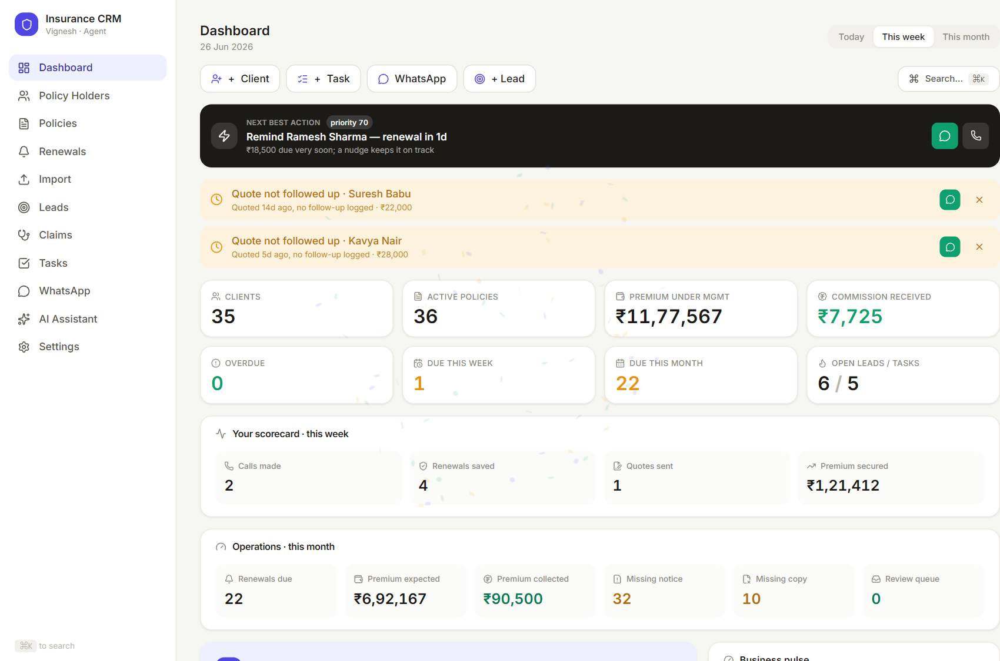
The left sidebar is your map:
| Menu | What it's for |
|---|---|
| Dashboard | Your morning overview — what needs attention, money at risk, today's plan |
| Policy Holders | Every client, their policies, documents, family and KYC vault |
| Policies | All policies across all clients in one list |
| Renewals | Everything coming up or overdue, with one-click reminders |
| Import | Bulk-load renewals from Excel + auto-read policy/renewal PDFs |
| Leads | Your sales pipeline (New → Contacted → Quoted → Won/Lost) |
| Tasks | Your to-dos and reminders |
| Connect your number and send messages | |
| AI Assistant | Ask questions about your book and draft messages |
| Settings | Backups, your details, reminder preferences |
The master list of everyone you serve. Search by name or phone; click anyone to open their folder.
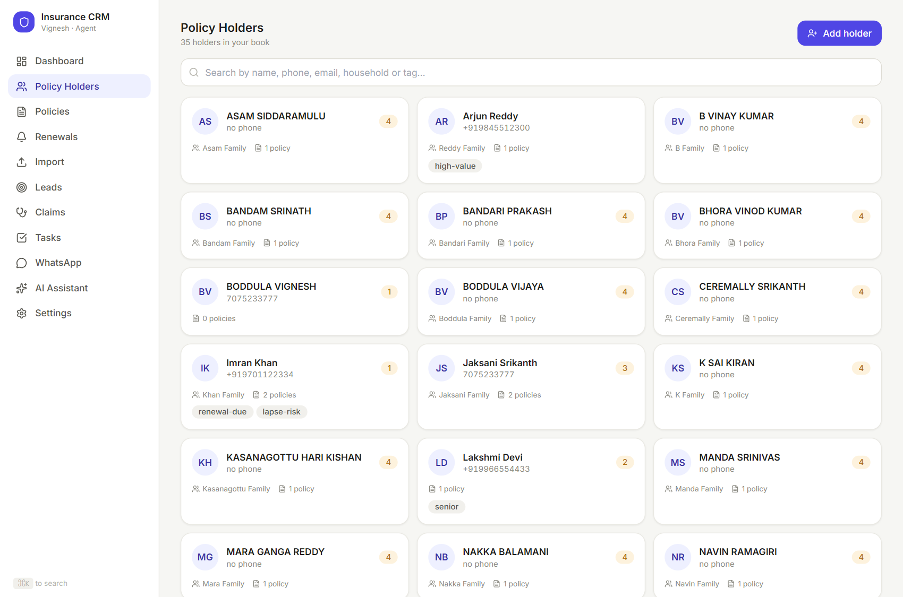
Everything about one person, in tabs: Overview, Policies, Documents (bucketed: Policy Copies / Renewal Notices / KYC / Claims / Other), Vault (Aadhaar/PAN masked, revealed only on click), Family, and Timeline. The buttons up top — ✨ Draft with AI, WhatsApp, Call, Edit — act on that person.
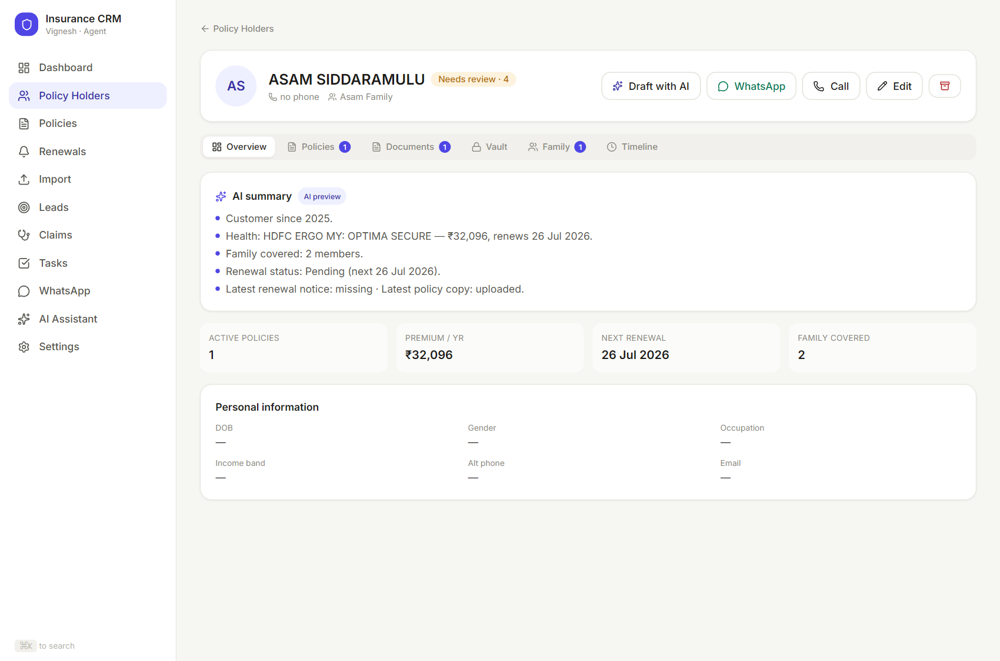
The board you'll live in. Grouped Overdue / This week / This month / Later, with the premium-at-risk total. Each row has a ✨ Draft button, a quick WhatsApp link, and Renewed (which rolls the due date forward a year).
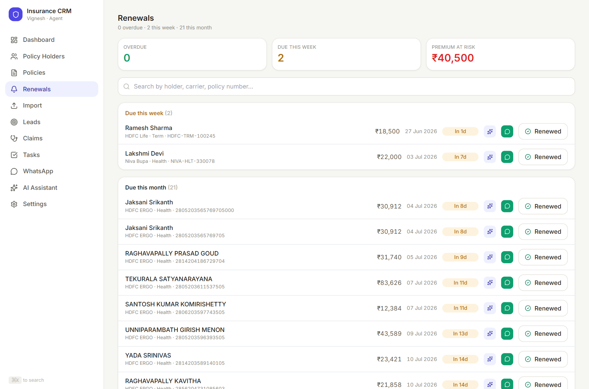
Bulk-load two ways: Excel (HDFC ERGO sheets, auto-matched, never duplicated) and policy/renewal PDFs (the app reads each one, auto-attaches confident matches, and puts the rest in a Review Queue).
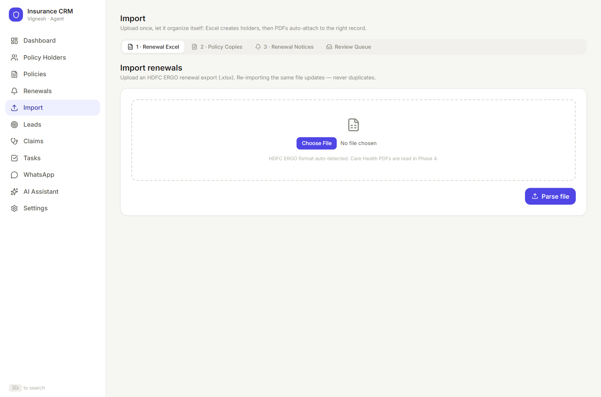
Your sales pipeline as columns. Move a lead forward one tap at a time, mark it lost, message them, or — when you win — convert it into a Policy Holder in one click.
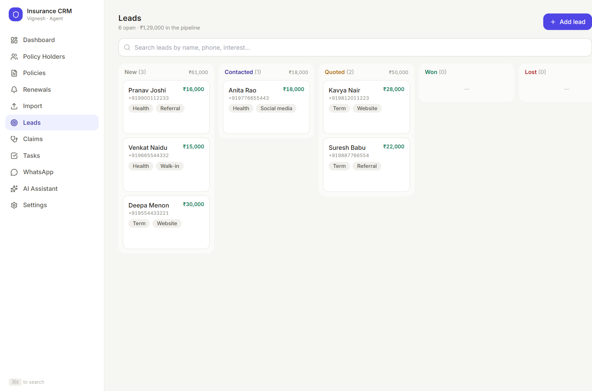
Simple to-dos grouped Overdue / Today / Upcoming / Done. Birthdays appear here automatically.
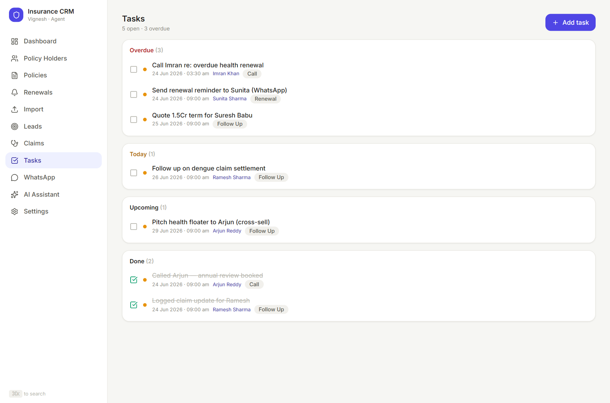
Link your own WhatsApp once (scan a QR with your phone), then send messages and policy files straight from the CRM. Every send is logged to that client's history.
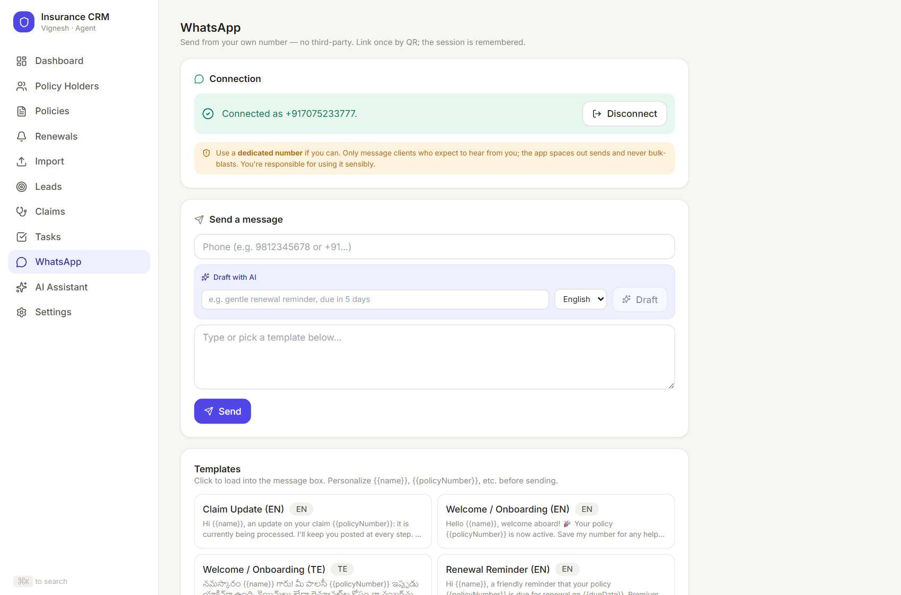
A chat that can see your live book (names, policies, renewals, leads, tasks — never your Aadhaar/PAN). Ask things like “Who has no health cover?” or “Draft a renewal reminder for my most overdue client in Telugu.”
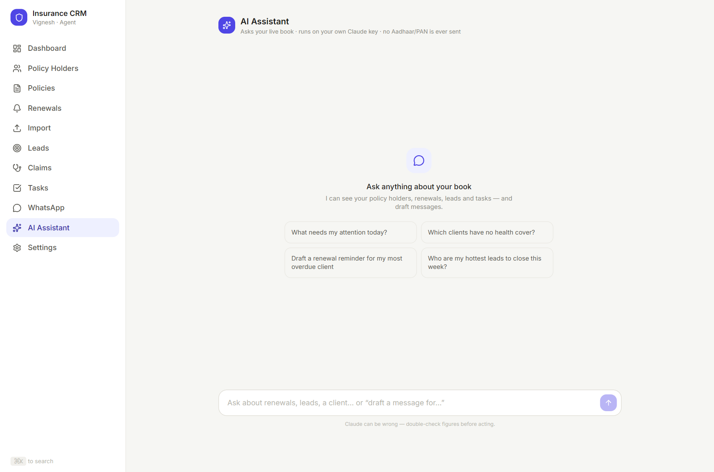
Encrypted backups and restore, a plain data export, your own details, and reminder preferences.
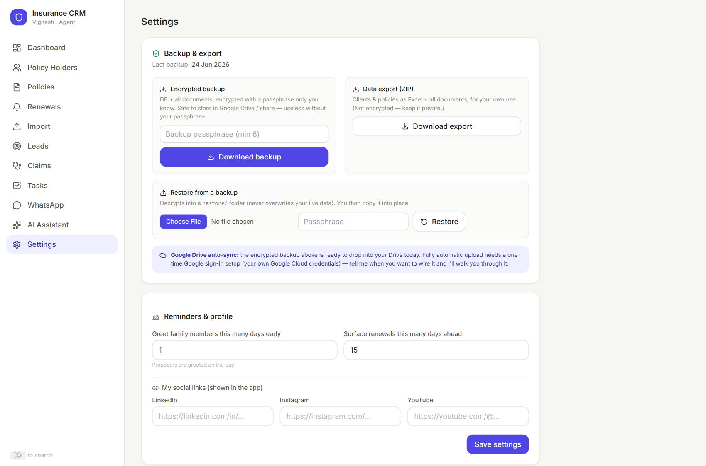
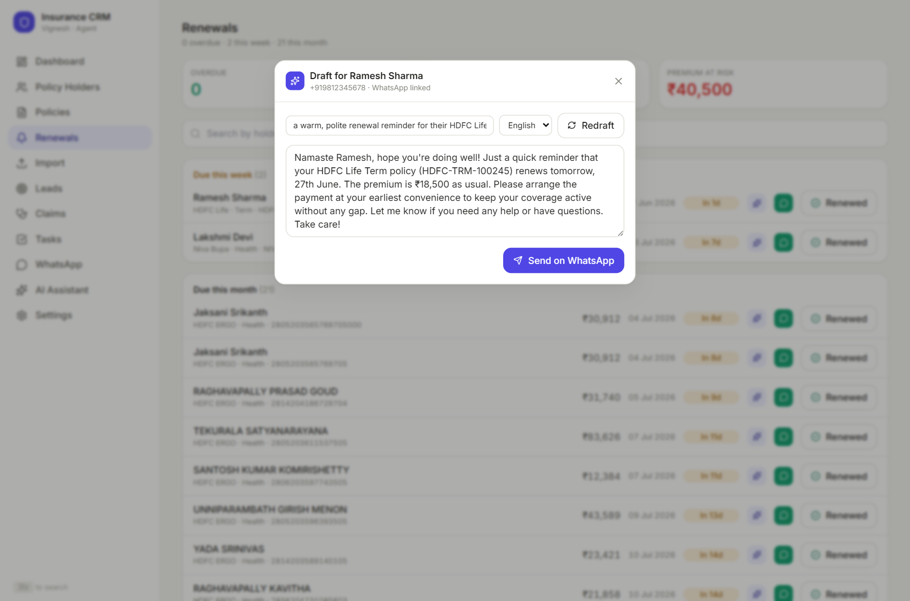
Solid arrows stay on your PC; dotted arrows are the only things that go out — and only when you act.
You (browser)
| (stays on your PC)
v
CRM server --> SQLite database file (all client / policy / lead / task data)
| \-> /storage (uploaded documents, ENCRYPTED)
|
|- - -> Claude AI only when you use an AI feature; sends names,
| policies, renewals, leads, tasks. NEVER Aadhaar/PAN.
|
\- - -> WhatsApp only when you press Send; from your own number.
What this means in practice:
prisma/dev.db. Backing that up (plus /storage and .env) backs up everything.XXXX XXXX 1234) until you click to reveal. The encryption key lives in your .env file and never leaves the PC.| Path | What it holds |
|---|---|
prisma/dev.db | The database — every client, policy, lead, task, message |
/storage | Uploaded documents, encrypted |
.env | Your secret keys (encryption key, Anthropic key) — never share this |
.wwebjs_auth | Your saved WhatsApp login (so you don't re-scan) |
Start CRM.cmd | Double-click to run the app (no terminal needed) |
.env file is the master key. If you lose it, encrypted data can't be recovered. Keep it (and your backup passphrase) somewhere safe.Start CRM.cmd).Update CRM.cmd once, then start as usual.START HERE.txt.Everything you see flows from one local database, protected on your own machine, with AI and WhatsApp as opt-in helpers you control.